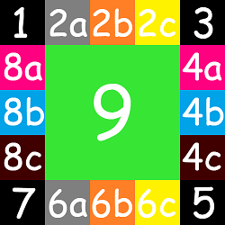

Cách tạo đường viền hình ảnh cho một phần tử
1) Cách tạo một cái đường viền hình ảnh cho phần tử
 |
- Để tạo một cái "đường viền hình ảnh" cho phần tử thì về cơ bản chúng ta cần phải thực hiện lần lượt ba công việc như sau.
|
1.1) Tạo một cái đường viền cho phần tử
- Thật ra thì đường viền hình ảnh không phải là đường viền của phần tử, nó là một thứ gì đó hiển thị đè lên đường viền của phần tử, nếu đường viền của phần tử không tồn tại thì đường viền hình ảnh sẽ không thể nào tồn tại. Cho nên, để tạo được một cái đường viền hình ảnh thì điều đầu tiên mà chúng ta cần phải làm đó chính là tạo một cái đường viền cho phần tử.
- Lưu ý: Bởi vì đường viền hình ảnh sẽ nằm đè lên đường viền của phần tử, cho nên kiểu & màu sắc của đường viền không quan trọng (miễn sao kiểu đường viền không phải none là được)
1.2) Xác định tấm hình dùng làm đường viền hình ảnh
- Để xác định tấm hình mà các bạn muốn dùng nó để làm đường viền hình ảnh thì chúng ta sử dụng thuộc tính border-image-source với cú pháp như sau:
1.3) Ghép tấm hình lên đường viền để tạo thành đường viền hình ảnh
- Sau khi đã tạo đường viền & xác định tấm hình dùng làm đường viền hình ảnh thì công việc cuối cùng đó chính là phân chia tấm hình ra thành nhiều mảnh, sau đó ghép các mảnh hình ảnh lên đường viền để tạo thành đường viền hình ảnh.
WEB CƠ BẢN
- Để tạo một cái "đường viền hình ảnh" cho phần tử giống như minh họa phía trên thì tôi thực hiện lần lượt các bước như sau:
- Bước 1: Sử dụng thuộc tính border để tạo một cái đường viền cho phần tử.
WEB CƠ BẢN
- Bước 2: Sử dụng thuộc tính border-image-source để xác định tấm hình mà mình muốn dùng để làm đường viền hình ảnh.
- Bước 3: Sử dụng thuộc tính border-image-slice để phân chia tấm hình ra thành nhiều mảnh, mặc định thì tấm hình sẽ được chia thành chín mảnh như bên dưới.
- Tám mảnh hình ảnh 1 2 3 4 5 6 7 8 sẽ được ghép lần lượt lên tám vị trí tương ứng trên đường viền của phần tử.
WEB CƠ BẢN
- Tạo thành đường viền hình ảnh.
WEB CƠ BẢN
2) Kỹ thuật phân chia các mảnh hình ảnh
- Như các bạn đã biết, thuộc tính border-image-slice dùng để phân chia tấm hình được sử dụng làm đường viền hình ảnh ra thành chín mảnh hình ảnh.
- Tuy nhiên, kích thước của mỗi mảnh hình ảnh không phải tự nhiên mà có, nó là do vị trí của bốn đường kẻ trên tấm hình tạo thành, ví dụ:
Tôi có một tấm hình với kích thước 380x380 như bên dưới |
Tôi cho vào đó bốn đường kẻ thì sẽ nhận được chín mảnh hình ảnh |
1 2 3 8 9 4 7 6 5 |
|
- Vậy vấn đề đặt ra ở đây là "làm thế nào để xác định vị trí của bốn đường kẻ đó !?" |
- Thông thường, thuộc tính border-image-slice sẽ nhận một giá trị bao gồm bốn số tương ứng với vị trí của bốn đường kẻ.
- Số thứ nhất dùng để tạo đường kẻ màu đỏ.
- Số thứ hai dùng để tạo đường kẻ màu xanh lá.
- Số thứ ba dùng để tạo đường kẻ màu xanh dương.
- Số thứ tư dùng để tạo đường kẻ màu đen.
- Ví dụ:
|
border-image-slice: 80 80 80 80;
(không được đặt chữ px phía sau các con số)
|
|
div{
border:100px solid black;
border-image-source:url(../image/pattern.png);
border-image-slice:80 80 80 80;
}
3) Tùy chỉnh kiểu lặp lại của bốn mảnh 2 4 6 8
- Thông thường, khi chúng ta thiết lập đường viền hình ảnh cho một phần tử thì mặc định, bốn mảnh hình ảnh 2 4 6 8 sẽ tự động giãn ra hoặc co lại để lấp đầy các vị trí tương ứng trên đường viền của phần tử.
- Tôi có một phần tử bên dưới:
- Và một tấm hình với kích thước 250x250 như sau:

- Tôi sử dụng tấm hình đó để làm đường viền hình ảnh cho phần tử phía trên, sau khi thiết lập thuộc tính border-image-slice với giá trị 50 50 50 50 thì phần tử phía trên sẽ trở thành:
- Tuy nhiên, với việc sử dụng thuộc tính border-image-repeat thì chúng ta có thể tùy chỉnh kiểu lặp lại của bốn mảnh hình ảnh này.
- Trong đó, value có thể được xác định dựa theo một trong sáu loại giá trị:
| stretch | - Bốn mảnh hình ảnh 2 4 6 8 sẽ tự động giãn ra hoặc co lại để lấp đầy các vị trí tương ứng trên đường viền của phần tử. |
Xem ví dụ |
| round | - Bốn mảnh hình ảnh 2 4 6 8 sẽ tự động giãn ra hoặc co lại để lấp đầy các vị trí tương ứng trên đường viền của phần tử (Tuy nhiên, bốn mảnh hình ảnh này chỉ có thể giãn ra ở một mức độ vừa phải, nếu các vị trí tương ứng có kích thước quá lớn so với chúng thì chúng sẽ tự động được lặp lại) |
|
| repeat | - Bốn mảnh hình ảnh 2 4 6 8 sẽ tự động được lặp lại hoặc xén bớt để lấp đầy các vị trí tương ứng trên đường viền. - Lưu ý: Bốn mảnh hình ảnh 2 4 6 8 không lặp lại hoàn toàn, chúng chỉ lặp lại một phần nào đó ở hai đầu vừa đủ để lấp đầy các các vị trí tương ứng trên đường viền mà thôi. |
|
| space |
- Đối với giá trị này thì các mảnh hình ảnh sẽ có những đặc điểm như sau:
|
|
| initial |
- Sử dụng giá trị mặc định của nó. (mặc định thì thuộc tính border-image-repeat có giá trị là stretch) |
|
| inherit | - Kế thừa giá trị thuộc tính border-image-repeat từ phần tử cha của nó. |
4) Cách thiết lập độ dày của đường viền hình ảnh
- Mặc định thì "đường viền hình ảnh" sẽ có độ dày bằng với độ dày đường viền của phần tử. Vì vậy, cách đơn giản nhất để thiết lập độ dày của "đường viền hình ảnh" đó chính là thiết lập độ dày đường viền của phần tử. Tuy nhiên, việc thay đổi độ dày đường viền của phần tử sẽ khiến kích thước của phần tử bị thay đổi theo (Xem ví dụ)
- Từ đây, chúng ta có một cách khác dùng để thiết độ dày cho "đường viền hình ảnh" mà không làm thay đổi kích thước của phần tử, đó chính là sử dụng thuộc tính border-image-width.
- Trong đó, value có thể được xác định dựa theo một trong sáu loại giá trị:
| pixel | - Chỉ định độ dày "đường viền hình ảnh" dựa theo một giá trị px cụ thể. |
Xem ví dụ |
| percent | - Chỉ định độ dày "đường viền hình ảnh" dựa theo tỷ lệ phần trăm kích thước của phần tử HTML.
|
|
| number | - Chỉ định độ dày "đường viền hình ảnh" dựa theo cấp số nhân so với độ dày đường viền của phần tử. |
|
| auto | - Giá trị của thuộc tính border-image-width sẽ bằng với giá trị của thuộc tính border-image-slice. |
|
| initial | - Sử dụng giá trị mặc định của nó (mặc định thì độ dày đường viền hình ảnh sẽ bằng với độ dày đường viền của phần tử) |
|
| inherit | - Kế thừa giá trị thuộc tính border-image-width từ phần tử cha của nó. |
- Lưu ý: Việc thiết lập độ dày cho "đường viền hình ảnh" bằng thuộc tính border-image-width cũng có mặt hạn chế, đó là khi độ dày của "đường viền hình ảnh" lớn hơn độ dày đường viền của phần tử thì đường viền hình ảnh sẽ ăn lẹm vào phần padding và content của phần tử.
5) Cách thiết lập vị trí của đường viền hình ảnh
- Mặc định thì "đường viền hình ảnh" sẽ nằm đè lên đường viền của phần tử.
- Tuy nhiên, với việc sử dụng thuộc tính border-image-outset thì chúng ta có thể đẩy đường viền hình ảnh ra khỏi vị trí ban đầu của nó.
- Trong đó, value có thể được xác định dựa theo một trong bốn loại giá trị:
| pixel | - Chỉ định khoảng cách đẩy "đường viền hình ảnh" ra khỏi vị trí ban đầu dựa theo một giá trị pixel cụ thể. |
Xem ví dụ |
| number | - Chỉ định khoảng cách đẩy "đường viền hình ảnh" ra khỏi vị trí ban đầu dựa theo cấp số nhân so với độ dày của đường viền. |
|
| initial |
- Sử dụng giá trị mặc định của nó (mặc định thì thuộc tính border-image-outset có giá trị là 0) |
|
| inherit | - Kế thừa giá trị thuộc tính border-image-outset từ phần tử cha của nó. |